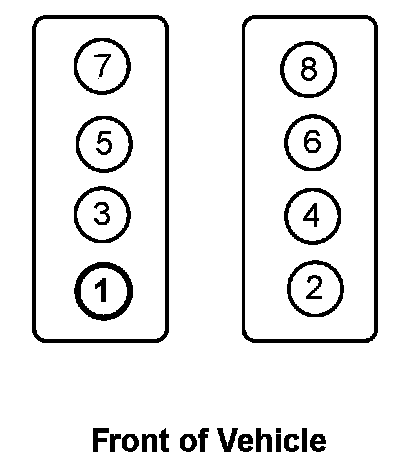

Number One Cylinder: Locations
NUMBER ONE CYLINDER

The left bank of cylinders are number 2-4-6-8 and the right bank cylinders are 1-3-5-7.
NOTE: Right hand (RH) and Left hand (LH) designations are viewed from the rear of the engine.
For ignition system firing order, Firing Order